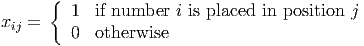

Solution:
The integer program is a facility location problem. It is:
 | (1) |
(i) We have
|
| (2) |
and
 | (3) |
with
We interpret zI as the LP relaxation of the original problem, so we keep the constraints 0 ≤ xj ≤ 1 for all j ∈ N. (Constraint B implies x ≥ 0, but there may be an advantage to taking some xj > 1 for constraint C, for some choices of the parameters.)
Note that zI = zIS since constraint S is redundant in (2) since it can be obtained by summing C over all j ∈ N and exploiting D.
Thus, the required result will follow from Theorem 6.2 on page 327 of the text if we can show that the extreme points of the LP relaxation of (3) are all binary in x. Let (,) be a feasible solution to the LP relaxation of (3) with 0 < < 1 for some ∈ N. We construct two new feasible points to the LP relaxation of (3):
- (x0,y0): set x0 = 0, y i0 = 0 for i ∈ I, with x j0 = j for j ∈ N, j≠ and yij0 = ij for i ∈ I, j ∈ N, j≠.
- (x1,y1): set x1 = 1, y i1 = for i ∈ I, with xj1 = j for j ∈ N, j≠ and yij1 = ij for i ∈ I, j ∈ N, j≠.
Then
so is not an extreme point of the LP relaxation of (3). Thus, by Thm 6.2 we have zI = z DS.
(ii) We have
 | (4) |
for u ≥ 0, with
Since the value of the LP relaxation is zI = zSI, we have the value z CS of a Lagrangian relaxation satisfies
from part (i), as required.
Solution:
(iii) It is immediate that zCS ≤ z SC.
To show the reverse inequality, we have
 | (5) |
for u ≥ 0, with
From Thm 6.2, zCS is equal to the optimal value of the original objective function over points satisfying C that are also in the convex hull of constraints D, B, and I. Any such point satisfies C and D, so it also satisfies S. Thus, it satisfies S, C, and lies in the convex hull of constraints D, B, and I. The value zSC is calculated using exactly this set of feasible points, so zCS ≥ z SC.
(iv) The value of the integer program is 2. The value of the LP relaxation is 1.5, which is equal to zDS as shown in part (i).
If we take all uj = 0 for j ∈ N, the value of zCS is 2.
Thus, we have zDS = 1.5 < 2 = z CS, as required.
The results were obtained with AMPL, using these model, data, and run files, giving this output.
(Hint: The optimal Lagrangian multipliers are integral.)
Solution:
We initialize with all Lagrangian multipliers equal to zero, giving a solution:

Following equation (3.14) on page 484 of the text, we set up the Lagrangian relaxation as
|
| (6) |
We adjust λ according to the degrees of the vertices in the initial 1-tree, leading to the choice

The modified cost matrix and an optimal 1-tree are then:
|
|

We adjust λ according to the degrees of the vertices in the current 1-tree, leading to the choice

The modified cost matrix and an optimal 1-tree are then:
|
|

Since this is a tour, it is optimal, with value 50.

it is desired to place each of the numbers 1,…,9 into exactly one of the nine empty positions so that the equation is correct. Note that the colon symbol is used to denote division, and the standard arithmetic rules apply so division and multiplication are performed before addition and subtraction.
- Formulate the problem as a mixed integer nonlinear feasibility program.
- Use the McCormick inequalities to express it as an equivalent mixed integer linear feasibility program, and hence solve it.
Solution:
- We index the nine positions from the start of the snake to the end. We define binary
variables
 We also define binary variables yik = xi2xk3 to represent the division at the end of the first column, and zikl = xi7xk8xl9 to represent the choice for the last three slots. We can then set up the feasibility problem

The inequality constraints are for symmetry-busting. Note that the constraints imply each yik and zikl are binary, and that yii = 0∀i, ziil = zili = zlii = 0∀i,l.
- We can express the problem as the following equivalent mixed integer linear program by
using the McCormick inequalities:
![Fi∑nd x, y, z, w s∑atisfy∑ing ∑ ∑ ∑
9i=1 ixi1 + 13 9i=1 9k=1-iyik + 9i=1 ixi4 + 12 9i=1ixi5 - 9i=1ixi6 - 11
∑9 ∑9 ∑9k
+ i=1 k=1 l=1 ikl zikl - 10 = 66
∑9
j=1xij = 1 for i = 1,...,9
∑9 xij = 1 for j = 1,...,9
i=1
yik ≤ xi2 for i = 1,...,9,k = 1,...,9
yik ≤ xk3 for i = 1,...,9,k = 1,...,9
yik ≥ xi2 + xk3 - 1 for i = 1, ...,9,k = 1,...,9
wik ≤ xi7 for i = 1,...,9, k = 1,...,9
wik ≤ xk8 for i = 1,...,9,k = 1,...,9
wik ≥ xi7 + xk8 - 1 for i = 1,...,9,k = 1,...,9
zikl ≤ wik for i = 1,...,9,k = 1,...,9
z ≤ x for i = 1,...,9,k = 1,...,9
ikl l9
zikl ≥ wik + xl9 - 1 for i = 1,...,9,k = 1, ...,9
∑9 ixi1 ≥ ∑9 kxk4 + 1 for i = 1,...,9,k = 1,...,9
∑9 i=1 ∑9k=1
i=1 ixi7 ≥ k=1 kxk8 + 1 for i = 1,...,9,k = 1,...,9
xij binary for i = 1,...,9,j = 1,...,9
yik binary for i = 1,...,9,k = 1,...,9
wik binary for i = 1,...,9, k = 1,...,9
zikl binary for i = 1,...,9,k = 1,...,9,l = 1,...,9](hw6sol19x.png)
Note we’ve represented zikl = wikxl9 and wik = xi7xk8.
One solution returned by AMPL is:

Apparently, there are multiple solutions to this problem, see this article.
| job | release time | due date | processing time | processing cost
| ||
| machine 1 | machine 2 | machine 1 | machine 2 | |||
| 1 | 0 | 10 | 3 | 2 | 4 | 3 |
| 2 | 0 | 10 | 3 | 4 | 4 | 3 |
| 3 | 5 | 7 | 1 | 3 | 3 | 2 |
| 4 | 2 | 6 | 3 | 2 | 3 | 2 |
| 5 | 2 | 6 | 2 | 3 | 3 | 2 |
| 6 | 6 | 10 | 3 | 2 | 2 | 3 |
| 7 | 6 | 10 | 2 | 1 | 3 | 4 |
We consider a logical Benders decomposition approach to this problem. Solve the initial Master Problem of minimizing total costs subject to each job must be assigned to one of the machines. Show that this solution is infeasible in the scheduling subproblems and generate valid constraints for the Master Problem.
Solution:
The solution to the initial Master Problem is
|
| (7) |
where xij = 1 if job i is assigned to machine j.
The total required processing time on machine 2 is then 2 + 4 + 3 + 2 + 3 = 14 > 10, so not all jobs can be finished by the latest due date of 10. This immediately leads to the valid constraint
|
| (8) |
Tighter valid constraints include
Note that the first two are implied by the last one, so it is only necessary to add constraints (11) and (12). We also obtain a constraint from machine 1:
|
| (13) |